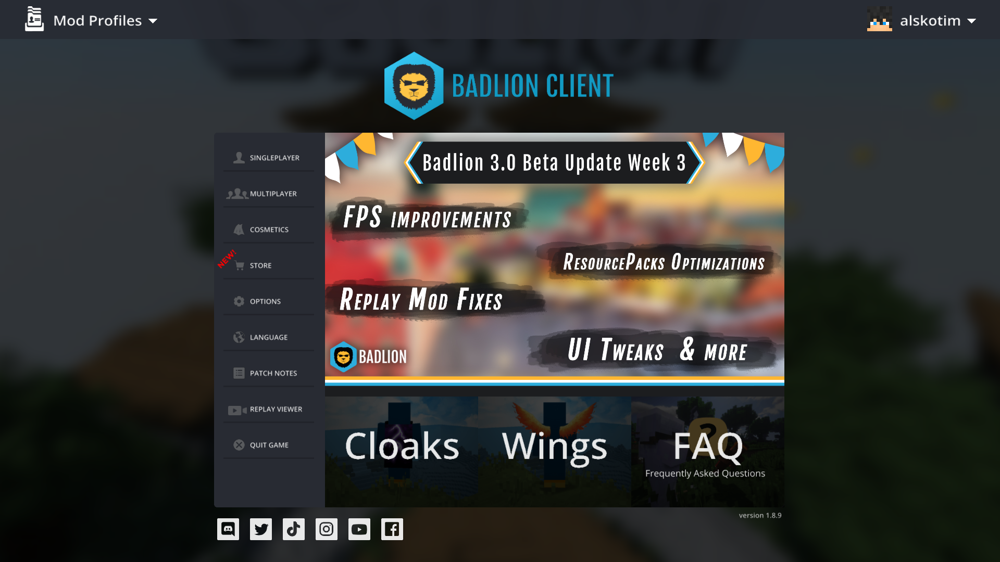

Hinweis: Diese Website wurde entwickelt, als es die Badlion 2.17 erschienen ist. Neuere Versionen oder Updates sind nicht vorhanden.

Der Badlion Client ist eine Modifikation für die Minecraft Java Edition. Ursprünglich war dieser für den ehemaligen Minecraft Server Badlion.net gedacht, dieser wurde jedoch im August 2019 geschlossen. Der Client ist für Minecraft PvP in der Java 1.7.10 und 1.8.9 entwickelt worden, man kann diesen aber auch in neueren Versionen spielen. Neben dem Badlion Client gibt es noch das Badlion Anticheat (BAC), welches Cheater abfangen und sperren soll. BAC ist heute das beste Anticheat-System, dass für Minecraft Server entwickelt wurde. Man kann sich für Geld Kosmetik kaufen, welche deinen Minecraft Charakter schöner aussehen lässt. Außerdem gibt der Badlion Client einen erheblichen FPS-Boost, womit man auch mit einem schlechteren Computer angenehm spielen kann.
Wenn man dem Client spielt, dann kann man ins Bild verschiedene Informationen anzeigen lassen. Zum Beispiel zeige ich bei mir oben rechts die Uhrzeit an, darunter meine FPS und darunter meinen Ping, wenn ich mit einem Server verbunden bin. Ich laufe den Client in der Minecraft 1.8.9, da dort das PvP-System anders ist als in neueren Versionen. Man kann in der 1.8.9 blocken, wodurch man besser PvP spielen kann. Außerdem kann man im Client einstellen, welche Einstellungen z.B. Items halten, Bogen spannen oder Schwert schlagen / blocken aus der Minecraft Java Edition 1.7.10 hat.
Der Client wird durch Optifine unterstützt, welches eine Modifikation ist, womit die Grafik in Minecraft reduziert, als auch verbessert, wird.
Der Client wird durch Optifine unterstützt, welches eine Modifikation ist, womit die Grafik in Minecraft reduziert, als auch verbessert, wird.


Wenn man mit dem Badlion Client spielen will, dann muss man sich die Minecraft Java Edition für 23,59 € kaufen. Dann kannst du dir den Client hier downloaden. Früher musste man sich auf dem Badlion-Server registrieren, aber jetzt kann man das auch beim starten. Wenn du dir den Client gedownloaded und im Launcher bist gehst du auf den Reiter "Play" bzw. "Spielen", dort kannst du dann auswählen welche Version du spielen möchtest, entescheiden ob du mit oder ohne Optifine spielst, dann abfahrt. Man kann auswählen, ob man die Badlion Beta verwenden will, dafür muss man aber sich eine Badlion Beta-Lizenz kaufen, wenn eine Beta verfügbar ist (Stand 2.12.2020 gibt es die Beta 3.0 [Aktuell 2.17]).